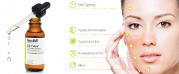
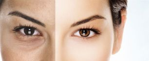
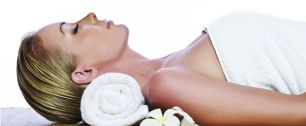
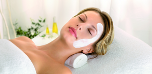

Kasvohoidot
Medik8 Peeling-hoidot

Medik8 tarjoaa lajitelman peeling -hoitoja eri ihotyyppien tarpeisiin. Valikoimassa on kuorintoja pinnallisista keskisyviin hoitoihin,
ihosi tarpeiden mukaan.
Lue lisää - Medik8
Carboksiterapia

Carboksiterapialla hoidetaan turvallisesti koko kehoa ja kaikkia ihotyyppejä. Hoidon aikana tunnet
hiilidioksidikuplien aiheuttaman kutituksen iholla. Hoidosta ei seuraa epämukavaa oloa tai toipumisaikaa.
Lue lisää - Carboksiterapia
Eckstein
Lue lisää - Eckstein
Timanttihionta
Lue lisää - Timanttihionta
Medik8 MediSpa-hoidot

Lajitelma medikaalisia Spa-hoitoja, jotka perustuvat innovatiivisiin, kliinisesti tutkittuihin ja tehokkaisiin hoitoaineisiin.
Hemmottelevat hoidot suunnitellaan ainutlaatuisiksi ihosi tarpeen mukaan.
Decleor

Decleor ammentaa raaka-aineensa luonnon aarreaitasta.
Eteeristen öljyjen energia, hurmaavat tuoksut, sekä hoitotuotteiden luonnolliset aktiiviaineet antavat
aromaattisiin hoitorituaaleihin ihanan hyvänolon tunteen, tehokkuutta unohtamatta.
Lue lisää - Decleor
Mikroneulaus
Dermica Pen – Uusinta tekniikkaa ihosi avuksi.Uudistaa,tasoittaa ja kiinteyttää ihoa turvallisesti ilman kirurgiaa!
Lue lisää - Mikroneulaus
Infusion neulaton mesoterapia
Sähköimpulsseja hyödyntävä Infusion™ -menetelmä perustuu Nobel-palkittuun teknologiaan, ja on
turvallinen sekä neulaton vaihtoehto perinteiselle mesoterapialle.
Lue lisää - Infusion